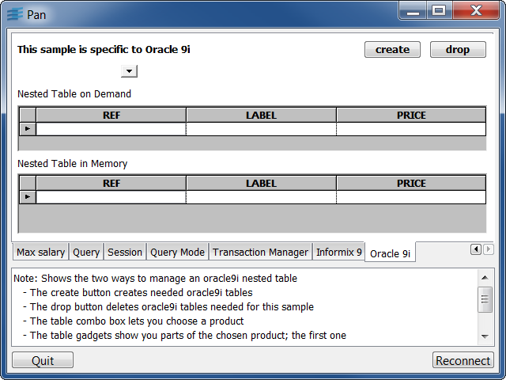

gaugeThis C++ sample shows how to connect a circular gauge to a SQL datasource column.
To refresh, click the @ button of the Navigator.
You can change the salary by:
employeeThis C++ sample shows how to display a list of employees for the chosen department.
To refresh, click the @ button of the Navigator.
To change department, use the Navigator.
The tables are read-only which means that you can edit the fields and Table Gadget but you can't validate the changes: an error occurs.
managerThis C++ sample shows how to display employee information taken from two tables.
To refresh, click within the Table Gadget and press the F9 key.
salaryThis C++ sample shows how to display the maximum salary for each department.
Buttons:
queryThis C++ sample shows how to use the IliSQLTable::setQueryConjunct member function to dynamically modify the selection criteria.

To select all information, click Select button.
To display Employees, Department and/or Manager beginning with "xy", type "xy" in the right field(s) and then click Select button.
sessionThis C++ sample shows how to use IliSQLSession and IliSQLCursor classes to directly submit SQL statement to a database.
To display all information, click Apply button.
To add/substract a value or a percentage, type it in the Bonus field and then click Apply button.
querymodThis Rogue Wave script sample shows how to use the query mode.
To refresh, click within the Table Gadget and press the F9 key.
When in query mode, the Table Gadget lets you enter your query. All conditions on the same line will be combined with an OR operator whereas conditions on different lines will be combined with an OR operator.
Buttons:
The message label tells you if cancel/apply succeeded, if you are in query mode or not and so on.
transmanThis Rogue Wave script sample shows how to use a transaction manager.
To display all information, click Start button. Then, choose a department in the top left Combo Box.
You can changes values, add/suppress a row in the Table Gadget, change the department manager with the top right Combo Box.
Buttons:
collectThis Rogue Wave script sample shows how to use Informix 9 collection property.
If the tables are not yet created, press create button.
To refresh, click within the top Table Gadget and press the F9 key.
The bottom Table Gadget displays the books information of the author selected in top Table Gadget.
Buttons:
nestThis Rogue Wave script sample shows how to use Oracle 9i nested tables property.
If the tables are not yet created, press create button.
To select data, choose an itm in the top left Combo Box. The two Table Gadgets display the same information: the list of articles needed.
The first Table Gadget shows the "on demand" technique. Two SQL Tables are used: one for selecting the nested table part and one for selecting the rest.
The second Table Gadget shows the "in memory" technique. Two SQL Tables are used: one for selecting database table data and one, connected to a Memory Table, to be used as a row cache.
Buttons: